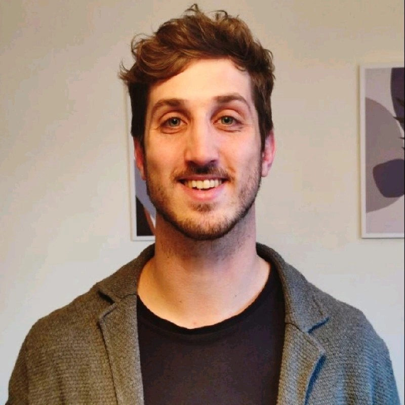

The wider network
The AI network within Chevening.
Chevening is the UK government's flagship international scholarship programme. Its alumni community includes 22 current or former heads of state or government, along with hundreds of ministers and industry leaders. CHAIN is the specialised artificial intelligence network within it.
Who we are
One network, four continents.
From Buenos Aires to Nairobi, Seoul to Kyiv -- CHAIN members bring together technical, legal, ethical and policy expertise from every corner of the Chevening world.
-- and many more.
Africa
Kenya, Lesotho, Morocco, Namibia, Sudan
Latin America
Argentina, Brazil, Chile, Colombia, Dominican Republic, Ecuador, Mexico, Peru, Uruguay
Asia
Brunei, Iran, Jordan, Kazakhstan, Lebanon, Malaysia, Pakistan, Palestine, South Korea, Syria
Europe
Armenia, Ukraine
Our members hold degrees from the University of Oxford, Imperial College London, LSE, UCL, the University of Edinburgh and others -- in fields spanning AI & data science, applied AI, and the ethics, law and policy of AI.
Leadership
The founding team.
CHAIN was founded in 2024 by three Chevening scholars -- now alumni -- who set out to give the AI community within the Chevening network a permanent home.
Andrés Cotton
President & Co-Founder
Agustina Brizio
Co-Founder

Lucas Pratesi
Co-Founder